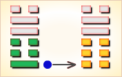
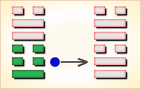
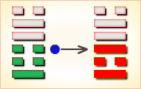
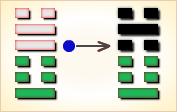
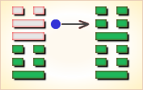
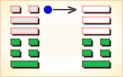

周易第17卦_随卦(泽雷随)_兑上震下
如有疑问互相交流，微信：470283584
周易第17卦详解
随卦原文
随。元亨，利贞，无咎。
象曰：泽中有雷，随。君子以向晦入宴息。
白话文解释
随卦：大吉大利，卜得吉兆，没有灾害。
《象辞》说：本卦下卦为震，震为雷，上卦为兑，兑为泽；雷入泽中，大地寒凝，万物蛰伏，是随卦的卦象。君子观此卦象，取法于随天时而沉寂的雷声，随时作息，向晚则入室休息。
《断易天机》解
随卦兑上震下，为震宫归魂卦。随即顺从、随时之意，占得此卦，凡事顺心，吉无不利。
北宋易学家邵雍解
随顺和同，贞固自持；随从机运，不能专横。
得此卦者，宜随大势，其事可成。凡事与他人多沟通交流，可名利双收。切不可坚持己见，专横者事不成。
台湾国学大儒傅佩荣解
时运：明年运行，五年方展。
财运：堆积存货，明春有利。
家宅：防止惊惧。
身体：休养为宜；牢狱之灾。
传统解卦
这个卦是异卦（下震上兑）相叠，震为雷，为动；兑为悦，动而悦就是“随”。随指相互顺从，己有随物，物能随己，彼此沟通。随必依时顺势，有原则和条件，以坚贞为前提。
大象：震木在兑泽之下，木必随水漂荡，随者，顺也。
运势：有去旧迎新之吉象，宜与人合作，可获厚利，忌三心两意，或独断独行。
事业：对社会和人生有正确的认识，重视人际关系，善于同他人合作，事业会很顺利。为了保证取得更进一步的成功，不得贪图小利，向比自己优秀的人学习，择善而从，心存诚信、努力开拓事业。
经商：顺利。在与他人的真诚合作下，能够达到预期的目的。在竞争中应保持清醒头脑，从大处、长远考虑，遵守商业道德，保持至诚的态度对待顾客和同行，会保持竞争优势。
求名：在自己刻苦钻研的基础上，虚心向有德有才的师长学习，借助外界的力量，促使自己更快的进步，实现个人的理想。
婚恋：双方情投意合可以成功，家庭和睦，但若迷恋于情爱，会影响双方的事业，务必注意。
决策：个人成长道路并不十分顺利，但由于谦虚、随和，人际关系好，尤其能够得到长辈的器重，各种事都能在他人的帮助和关心下成功。但务必注意追随他人应有的立场和原则，不可趋炎附势，招致祸凶。
台湾张铭仁解卦
随：表示随遇而安，一切随缘、随和。主吉象。事事均可依随着自己的心思计划来执行，会顺利地达成。事业、投资、理财、感情，均会有令人满意的发展和收获。
解释：跟随上司主意行事。
特性：交际佳，贵人运多，善谋略，为辅佐良才，保守，被动。
运势：物事均有去旧迎新之吉象，凡事与他人互相通达、协商，可名利双收。倘若三心二意，或独立单行，不听人言劝，有自招灾祸之虞。
家运：本身有相当不错的收入，富有之象。但不可过于放纵，守操节为宜。
疾病：病重，须长期治疗，注意口腔、肝、足患等症。
胎孕：无碍，无惊险。
子女：亲情融洽，与六亲和睦，幸福之象。
周转：和气相商有利，意气用事则难成。
买卖：勿顽强固执，则交易有利。否则失之，有阻。
等人：会迟到。
寻人：不必去找了，过些时日会自己回来，勿急。
失物：即将疏忽之时，会突然察觉。
外出：吉利。可以改变处境。
考试：成绩理想。
诉讼：宜决意和解，目前无忧，但不久须防有祸。
求事：虽吉，然若能谦逊待人，多接受别人意见，会得人提拔。
改行：有充分计划者可行。
开业：吉利。
周易第17卦初九爻详解
初九爻辞
初九。官有渝，贞吉。 出门交有功。
象曰：官有渝，从正吉也；出门交有功，不失也。
白话文解释
初九：馆舍时里发生事故，筮遇此爻则吉，出门同行都得好处。
《象辞》说：官吏把事情办坏了，归从正道则吉利。出门同行都得好处，这是不失正道的缘故。
北宋易学家邵雍解
吉：得此爻者，多获利。做官的正当好运，有升迁之机。
台湾国学大儒傅佩荣解
时运：交运之时，利于变动。
财运：货物外售，可以得利。
家宅：装修迁居。
身体：改变用药，远方求医。
初九变卦

初九爻动变得周易第45卦：泽地萃。这个卦是异卦（下坤上兑）相叠。坤为地、为顺；兑为泽、为水。泽泛滥淹没大地，人众多相互斗争，危机必四伏，务必顺天任贤，未雨绸缪，柔顺而又和悦，彼此相得益彰，安居乐业。萃，聚集、团结。
周易第17卦六二爻详解
六二爻辞
六二。系小子，失丈夫。
象曰：系小子，弗兼与也。
白话文解释
六二：抓住了未成年的奴隶，跑了成年的奴隶。
《象辞》说：抓住了小的，跑了大的，意思是两者不能兼得。
北宋易学家邵雍解
凶：得此爻者，不安宁，或受小人的暗算，是非不断。当官的宜退守，进取者要有自知之明。
台湾国学大儒傅佩荣解
时运：形势颠倒，最好谨慎。
财运：贪小失大，显然不利。
家宅：家主受累；婚嫁不妥。
身体：顾此失彼。
六二变卦

六二爻动变得周易第58卦：兑为泽。这个卦是同卦（下泽上泽）相叠。泽为水。两泽相连，两水交流，上下相和，团结一致，朋友相助，欢欣喜悦。兑为悦也。同秉刚健之德，外抱柔和之姿，坚行正道，导民向上。
周易第17卦六三爻详解
六三爻辞
六三。系丈夫，失小子。随有求得，利居贞。
象曰：系丈夫，志舍下也。
白话文解释
六三：抓住了成年奴隶，跑了未成年奴隶。希望无失不如现得。筮遇此爻，卜问居处则吉利。
《象辞》说：抓了大的，跑了小的，其志在于追逐大的，舍弃小的。
北宋易学家邵雍解
平：得此爻者，营谋遂意，但宜走正道，才能得利。做官的会得到保举而升迁有望。
台湾国学大儒傅佩荣解
时运：求财求名，皆为正运。
财运：小往大来，利益可期。
家宅：积蓄有成，关心子女。
身体：大人无妨，小孩不利。
六三变卦

六三爻动变得周易第49卦：泽火革。这个卦是异卦（下离上兑）相叠。离为火、兑为泽，泽内有水。水在上而下浇，火在下而上升。火旺水干，水大火熄。二者相生亦相克，必然出现变革。变革是宇宙的基本规律。
周易第17卦九四爻详解
九四爻辞
九四。随有获，贞凶。有孚在道，以明，何咎。
象曰：随有获，其义凶也。有孚在道，明功也。
白话文解释
九四：追名逐利，贪多务获，卜问得凶兆。押送俘虏上路，明于约束，没有灾难。
《象辞》说：追名逐利，贪多务获，这种人遭遇凶险是应该的。谨守信用，严守正道，这是明察事功的结果。
北宋易学家邵雍解
平：得此爻者，会得到好人的抬举，化凶为吉。做官的会身居要职，努力进取者可成事，可获得名利。
台湾国学大儒傅佩荣解
时运：吉凶互见，明年吉祥。
财运：虽有获利，小心意外。
家宅：置屋不宜。
身体：先凶后吉。
九四变卦

九四爻动变得周易第3卦：水雷屯。这个卦是异卦（下震上坎）相叠，震为雷，喻动；坎为雨，喻险。雷雨交加，险象丛生，环境恶劣。“屯”原指植物萌生大地，万物始生，充满艰难险阻，然而顺时应运，必欣欣向荣。
周易第17卦九五爻详解
九五爻辞
九五。孚于嘉，吉。
象曰：孚于嘉吉，位正中也。
白话文解释
九五：俘虏了不少嘉人，吉利。
《象辞》说：信守中正之道，诸事吉利，因为九五之爻居上卦中位，像人守中正之道。
北宋易学家邵雍解
吉：得此爻者，营谋遂意，多喜庆之事，做官的会升职，或多喜事。
台湾国学大儒傅佩荣解
时运：正当好运，诸事皆吉。
财运：货物上品，得利不少。
家宅：积善之家；婚嫁可喜。
身体：无须担心。
九五变卦

九五爻动变得周易第51卦：震为雷。这个卦是同卦（下震上震）相叠。震为雷，两震相叠，反响巨大，可消除沉闷之气，亨通畅达。平日应居安思危，怀恐惧心理，不敢有所怠慢，遇到突发事变，也能安然自若，谈笑如常。
周易第17卦上六爻详解
上六爻辞
上六。拘系之，乃从维之。王用亨于西山。
象曰：拘系之，上穷也。
白话文解释
上六：将俘虏拘禁起来，紧紧捆绑，周文王将他们作为人牲在西山祭祀神灵。
《象辞》说：被捆绑拘禁，因为上六居一卦之尽头，像人处于穷困之境地。
北宋易学家邵雍解
凶：得此爻者，苦难多多，不很如意，重病者会有生命之忧。做官的须防止小人的谗言。
台湾国学大儒傅佩荣解
时运：困难重重，难以如意。
财运：稳扎稳打，未能伸展。
家宅：家人抱怨；嫁娶有缘。
身体：诚心祷告；可能归魂。
上六变卦

上六爻动变得周易第25卦：天雷无妄。这个卦是异卦（下震上乾）相叠。乾为天为刚为健；震为雷为刚为动。动而健，刚阳盛，人心振奋，必有所得，但唯循纯正，不可妄行。无妄必有获，必可致福。